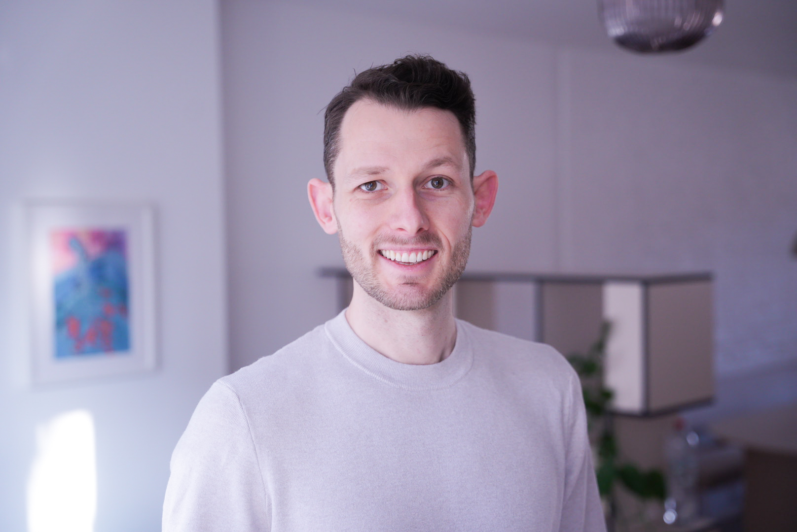

Jan-Gerrit Harms
Software Engineer
I build scalable software systems that are easy to maintain and deliver value to users.
Need help with your next project?
Hi, I’m Jan. I design, build, deploy, and operate software systems. I especially enjoy working at the intersection of engineering and users, and I thrive in multi-disciplinary teams.
Currently, I’m a self-employed software engineer based in the Netherlands, with a current assignment at PwC in Amsterdam. Previously, I co-founded a startup focused on customs clearance, worked at a venture studio in collaboration with Port of Rotterdam, ABN Amro, and Standard & Poor’s, and completed my studies at Delft University of Technology in Computer Science and Aerospace Engineering.
Outside of work, I enjoy cooking, photogrpahy, staying active (running, cycling, hiking), and keeping up with the latest trends in software development.
resumé
-
Self-employed Software Engineer (2025 - current)
I help companies design, build and operate scalable software systems. Currently, I am at PwC, working on the redesign and implementation of a web-based application platform.
Systems design Golang Kubernetes Javascript React Python -
Co-Founder & CTO, QuayConnect (2023 - 2025)
Co-founded a startup focused on simplifying customs clearance processes. Led the development of the core platform, overseeing both frontend and backend engineering.
Systems design TypeScript Node.js React Google Cloud Golang -
Software Engineer, Engineering manager, Docklab (2018 - 2023)
Designed and built greenfield software solutions in the logistics and energy sector, collaborating with Port of Rotterdam, ABN Amro, and Standard&Poor among others. Grew the engineering team from 3 to 20.
Golang Terraform Systems design Kubernetes Solidity Typescript React -
MSc Computer Science, Distributed Systems, TU Delft (2018)
Completed by MSc in Computer Science at TU Delft. Thesis on the topic of consus algorithms in DAG Blockchains at the Distributed systems department. I also published a short survey paper on conversational agents titled Approaches for Dialog Management in Conversational Agents
Python Distributed systems Systems design React -
Robotics Engineer, Welbo (2015-2018)
We built software for social robots to welcome and guide visitors at office buildings and public places. I built and operated the backend system and on-device software.
C++ Python React Typescript React